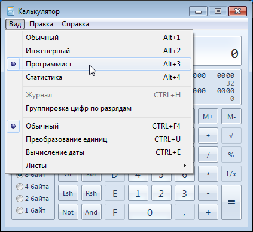
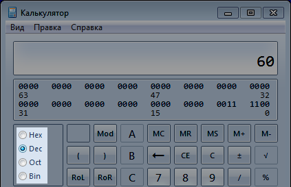

Содержание
Этот режим может упростить ромхакеру жизнь при работе с байтами и битами. В нем также есть несколько полезных кнопок для тестирования битовых команд процессора.
Переключи калькулятор в режим Программист во вкладке Вид.

Калькулятор запоминает выбранный режим после закрытия окна.
Для классической работы с десятичными числами переключись обратно на Обычный режим.
Дробные числа не существуют в режиме Программист. При делении ты получишь целое число без остатка, например 10/4 = 2, а не 2,5. Изредка именно такой результат тебе и будет нужен.
Слева можно вручную (или горячими клавишами F5-F8) переключать систему счисления.

Hex = Hexadecimal (шестнадцатеричная), Dec = Decimal (десятичная), Oct = Octal (восьмеричная), Bin = Binary (двоичная).
Восьмеричная система счисления (Oct) не представляет интереса для ромхакинга.
Любое введенное в калькуляторе число можно переводить в другую систему счисления, переключая соответствующие опции слева. Например, число 60 в Dec = байт #$3C в Hex = биты #%00111100 в Bin.
После перевода из одной системы счисления в другую, дальнейший ввод числа приведет к тому, что ввод начнется заново.
Переключившись на опцию Hex, можно вводить латинские буквы A, B, C, D, E и F с клавиатуры, без необходимости переключать раскладку на английскую.
Альтернатива - в окне калькулятора слева от цифр есть кнопки с этими буквами.
Кликая под введенным числом по первым 8-ми битам и меняя их состояние на 0 или 1, ты можешь создавать до 256-ти комбинаций битов, конструируя из них соответствующие байты от #$00 до #$FF.
Чаще всего нужно предварительно включить опцию Hex. Биты в других системах счисления вряд ли будут тебе интересны.
После переключения состояния битов, дальнейший ввод числа приведет к тому, что ввод начнется заново.